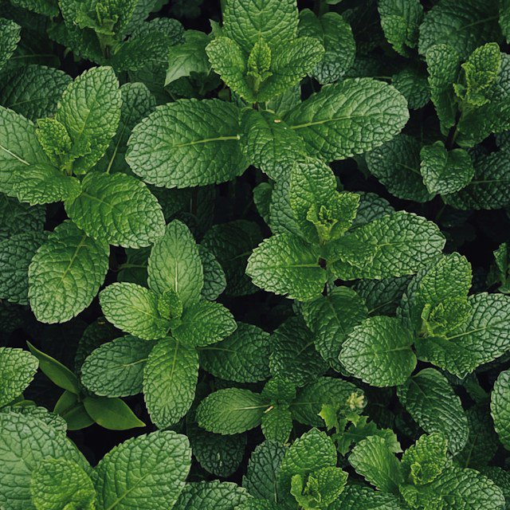

Menta
Esta planta aromática de la familia Lamiaceae destaca por su inconfundible fragancia fresca y mentolada. Es ampliamente cultivada y utilizada tanto en la gastronomía global como en remedios naturales gracias a su alto contenido de mentol.
Cómo hacer la infusión: Agrega 5-6 hojas frescas (o 1 cucharadita de secas) a una taza de agua hirviendo. Tapa y deja reposar de 5 a 7 minutos antes de colar.
Beneficios: Alivia problemas digestivos como la pesadez o los gases, descongestiona las vías respiratorias y ayuda a reducir los dolores de cabeza tensionales.